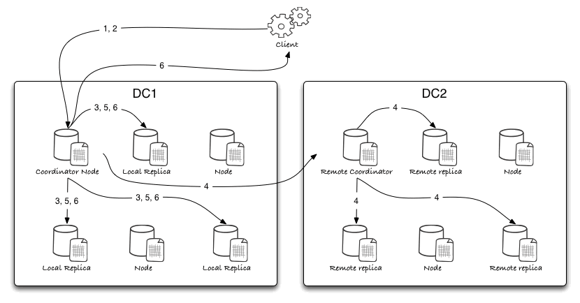
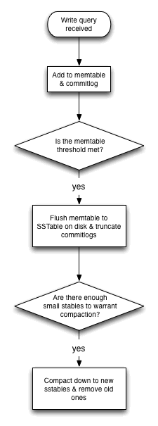
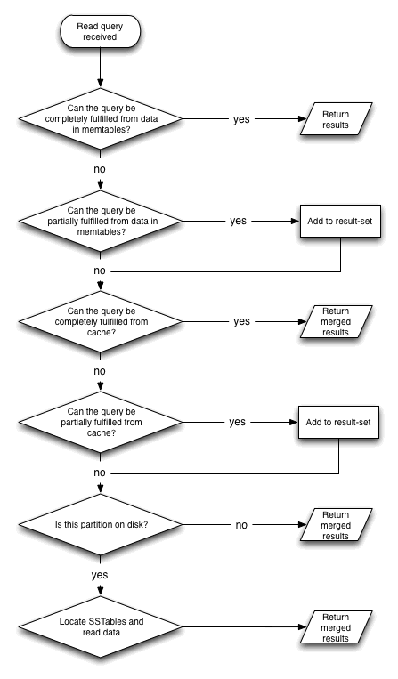

Cassandra: Write & read paths
Chris Hoolihan (chrusty@gmail.com)
Contents
Contents
Introduction
Links
Background
The write-path
As a cluster
On each replica
The read-path
As a cluster
On each replica
Introduction
This document is intended to provide an overview of how Cassandra stores and retrieves data internally. This knowledge will hopefully be useful when diagnosing performance issues, and when making scaling / capacity decisions.
Links
Background
Cassandra was designed to be optimised towards prioritising fast writes. The ability to absorb large volumes of data very quickly was always touted as one of its unique selling points, and to this day it is still one of the features that Cassandra is most well known for.
Unfortunately you don’t get anything for free, and this write-optimisation requires an amount of understanding for any project using Cassandra to be successful.
The write-path
For simplicity I will base examples on a single-partition query. Assume that multi-partition queries perform the same list of operations for each partition involved. I will also ignore the added complexity of Materialised Views.
I’ve broken the process into two sections:
- “As a cluster” describes how the cluster routes traffic to the appropriate node(s) and coordinates the communication.
- “On each replica” describes what happens to the data when it reaches the correct node(s).
As a cluster
The first part of the process is to figure out which node(s) are responsible for the data in question and to distribute it correctly.
- A client establishes a connection to a node in the Cassandra cluster. This node (doesn’t matter which one, random is fine) is known as the “coordinator-node”.
- The client submits a query to the coordinator-node.
- The coordinator-node determines which partition(s) are involved in fulfilling the query (the “replica-nodes”), and forwards the request to each of them in parallel (if they’re in the same logical “datacentre”).
- If there are replicas in a remote datacentre then the coordinator will pick one remote replica as a remote-coordinator, forward the query to it, and allow the remote-coordinator to distribute the query. In stronger-consistency levels the local coordinator node may actually deal directly with remote replicas, t.b.c.
- If any of the replica-nodes are currently offline or unavailable, the query is stored as a “hint” on the coordinator node, and forwarded to the replica if/when it comes back online.
- The coordinator node will hold the connection with the client open until one of the following occurs:
- Enough replicas have responded successfully to the coordinator node to satisfy the consistency-level of the original request (in which case a successful response is returned to the client).
- A timeout is reached (or errors received) while waiting for responses (in which case a negative response is returned to the client).

On each replica
Once a write query reaches the correct replica it needs to be stored.
- The new data is immediately stored in memory in a structure called a “memtable”.
- The new data is also immediately written to a “commitlog” (which is a separately configurable area of on-disk storage).
- Once the maximum configured size-limit is hit (or if a manual flush is triggered) then the data from the memtables is flushed to new sstable files in the appropriate locations on the Cassandra’s data-directory (organised by keyspace/table).
- Because Cassandra is optimised towards write-performance, when data is written to disk it does not attempt to update existing values - instead it simply records the new values, and merges them together when the partitions are read. Over time this leads to an ever-increasing number of SSTables on disk. Cassandra will periodically merge SSTables together to create new files, then delete the old ones. This process is known as “compaction”.

The read-path
For simplicity I will base examples on a single-partition query. Assume that multi-partition queries perform the same list of operations for each partition involved. I will also ignore the added complexity of Materialised Views.
Again I’ve broken the process into two sections.
As a cluster
The first part of the process is to figure out which node(s) are responsible for the data in question and to gather results.
- A client establishes a connection to a node in the Cassandra cluster. This node (doesn’t matter which one, random is fine) is known as the “coordinator-node”.
- The client submits a query to the coordinator-node.
- The coordinator-node determines which partition(s) are involved in fulfilling the query (the “replica-nodes”), and forwards the request to as many of them are required to fulfill the query consistency-level (the fastest replica is preferred).
- The coordinator node will hold the connection with the client open until one of the following occurs:
- Enough replicas have responded successfully to the coordinator node to satisfy the consistency-level of the original request (in which case a successful response is returned to the client).
- A timeout is reached (or errors received) while waiting for responses (in which case a negative response is returned to the client).
- If there is any inconsistency discovered in the data returned from the replicas then a repair is triggered for the partitions involved. In this circumstance the most recently written value is returned to the client, and is replicated out.
- According to the configurable read-repair chance, a background repair may be triggered for the partitions involved in this query anyway. In this way a Cassandra cluster can keep your most frequently accessed data strongly consistent without incurring availability penalties to your queries.
On each replica
- Cassandra first checks the memtables to see if it can serve the query directly from memory (obviously this would be the quickest option).
- Next it checks the “row-cache” to see if the requested data has been completely cached recently - again this would be an efficient location to serve a query from.
- If the row isn’t in memory, then it checks various index structures to see if the requested partition actually exists on disk, and if so which SSTable(s) it is stored in.
- The latest values for each column requested are merged together from all of these available sources, then returned to the coordinator node as a result set.
